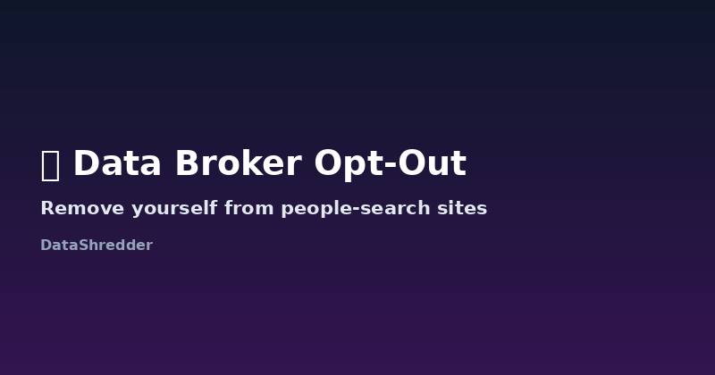

How to Opt Out of Data Brokers & People-Search Sites (2026 Guide)
Updated August 2026 · 14 min read

What are data brokers, exactly?
A data broker is any company whose business is collecting your personal information — name, address, phone number, relatives, property records, even estimated income — and selling access to it. Some, like Whitepages or Spokeo, package it as a public "people-search" site anyone can use for a small fee. Others sell it in bulk to marketers, insurers, or background-check companies you'll never interact with directly. You didn't sign up for any of this; they built your profile from public records, data breaches, loyalty programs, and purchases from other brokers who did the same thing before them.
The industry is larger than most people realize. A single person's profile is often listed, in slightly different forms, across 50 to 100+ separate broker databases at once — which is exactly why "just remove myself from Google" doesn't actually solve the problem. Google is indexing what the brokers already published; the fix has to happen at the source.
Where they actually get your information
It helps to know the sources, because it explains why your listing keeps reappearing even after you remove it once:
- Public records: property deeds, voter registrations, marriage and court records — all legally public in most US states, and brokers scrape them on a schedule.
- Data breaches: old breached databases get resold and merged into broker profiles years after the original breach.
- Other brokers: brokers buy and sell data from each other, which is why removing yourself from one doesn't remove you from the twenty that bought a copy of their database last year.
- Purchase and loyalty data: some brokers buy anonymized-then-re-identified purchase histories from retailers and data co-ops.
The sites to remove yourself from first
There are well over a hundred data broker sites, and trying to hit all of them at once is how most people give up after week one. Start with the handful that show up on the first page of a Google search of your own name — that's usually Whitepages, Spokeo, MyLife, BeenVerified, TruePeopleSearch, and Intelius. These are the sites employers, landlords, and strangers actually see.
| Site | What it exposes | Typical opt-out time |
|---|---|---|
| Whitepages | Address, phone, relatives | Up to 24 hours after form + phone verification |
| Spokeo | Address, social profiles, photos | Immediate, email confirmation |
| BeenVerified | Court records, background data | Up to 24 hours |
| MyLife | "Reputation score," family details | Days to weeks (known for being slow) |
| TruePeopleSearch | Address history, phone, relatives | Usually within a few hours |
| Intelius | Background reports, address history | Up to 72 hours |
The rest of the list: mid-tier and niche brokers
Once the first six are done, the next tier is smaller but still worth clearing: Radaris, PeopleFinders, USSearch, FastPeopleSearch, Instant Checkmate, PeopleLooker, and CheckPeople all follow roughly the same opt-out pattern — search for your listing, submit a removal form, confirm by email. None of these require payment to opt out, even though most of them charge for the "full report" a stranger would pay to see. A reasonable pace is two or three sites a week; trying to do all thirty in one sitting is what causes people to abandon the process halfway through.
A real walkthrough: removing yourself from Whitepages
- Go to Whitepages.com and search your own name and city to find your listing.
- Copy the exact URL of your specific profile page — not just the search results page.
- Navigate to their dedicated "Suppression Request" page (search "whitepages opt out" if the link has moved).
- Paste your profile URL, and follow the phone verification step — Whitepages is one of the few that requires this.
- You'll get a confirmation on screen; removal typically completes within 24 hours.
The pattern above is nearly identical across most brokers, with two variables: whether they require phone or email verification, and how long they claim processing takes. Sites that skip verification entirely are usually faster but also less careful about who's requesting the removal, which is worth knowing if privacy is your main concern.
Manual removal vs. paid services
Paid removal services exist because manual opt-outs are tedious, not because they're impossible. If you have a few evenings free, doing it yourself costs nothing. If you'd rather not repeat the process every few months — because brokers do re-scrape public records and your listing can reappear — a paid monitoring service saves time, but it's a convenience fee, not a legal necessity. Nothing about data broker removal requires payment, and no legitimate broker can force you to pay to exercise your removal right.
The legal right behind your request
If you're in the EU or UK, data brokers are data controllers under GDPR, and you can invoke Article 17 the same way you would with any company. In California, brokers registered with the state must honor deletion requests under CCPA, and the state now runs a centralized Data Broker Registry you can check to confirm a company is required to comply. Citing the specific law in your request tends to get a faster response than a generic "please remove my info" email — brokers that ignore vague requests often respond quickly once a legal citation is on record.
Keeping your listing from coming back
Because brokers re-scrape public records on a rolling basis, a listing you removed six months ago can reappear without any new action on your part. A realistic maintenance schedule is checking the top six sites from the priority list above every 60–90 days, rather than treating removal as a one-time task. If a listing does reappear, the opt-out process is usually faster the second time since the site already has a record of your previous request.
If a broker's opt-out form is broken, hidden, or simply doesn't exist, use our free deletion request generator to draft a formal, legally-worded request instead. It works for data brokers exactly the same way it works for Facebook or your bank.
Frequently Asked Questions
Will my data come back after I opt out?
Often, yes — data brokers rebuild profiles from public records and other broker feeds every few months. Rechecking every 60-90 days is a reasonable schedule for the highest-visibility sites.
Do I have to pay to remove myself from data broker sites?
No. Every major data broker's opt-out process is free by law. Paid services only save you the time of doing it manually across many sites.
Can I remove myself from all data brokers at once?
Not with a single request — each broker operates independently and requires its own opt-out submission, though a formal legal request citing GDPR or CCPA can speed up individual responses.
Why do multiple sites show the same information about me?
Brokers buy and sell data from each other constantly, so removing yourself from one site's original listing doesn't remove copies that other brokers already purchased before your request.